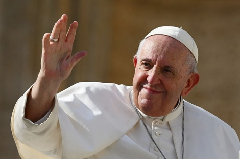

Esta ya es la estancia más larga de Bergoglio en el hospital, tras 28 días. El pontífice continúa con la alternancia entre ventilación mecánica no invasiva y oxigenación de alto flujo con cánulas nasales
Escrito por Lautaro Sánchez
El papa Francisco pudo celebrar este jueves sus doce años de pontificado con los sanitarios del hospital Gemelli de Roma, donde lleva 28 días ingresado por sus problemas respiratorios, indicaron fuentes vaticanas.
Los sanitarios le llevaron por sorpresa una tarta con velas para celebrar el décimosegundo aniversario de la ‘fumata blanca’ que anunció al mundo el 13 de febrero de 2013 su elección como pontífice, el primer latinoamericano de la historia.
Esta pequeña “fiesta” tuvo lugar esta tarde en el apartamento privado que los papas tienen en el décimo piso de este hospital.
El papa, de 88 años, permanece hospitalizado desde el 14 de febrero por una neumonía bilateral y otros problemas respiratorios y, aunque ha sufrido varias crisis, actualmente experimenta una “mejoría” y una “buena” respuesta a la terapia.
Por el momento no se puede prever cuándo Francisco saldrá del hospital. “La situación es estable y se requiere tiempo para que un cuerpo de 88 años se recupere”, subrayaron las fuentes.
Los médicos del papa insisten en que su situación es “estable” pero dentro de un cuadro “complejo” y por el momento no está prevista una nueva rueda de prensa con los médicos del Gemelli.